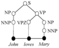

TrEd Extension: ptb (version 1.17)
Penn Treebank
(generated documentation)
Description:
This package contains
a conversion script for Penn Treebank merged data format to PML
and a stylesheets for visualization of the resulting PML in TrEd.
TrEd macro files:
Stylesheet files:
- /export/home/pajas/projects/tred-extensions/ptb/stylesheets/Penn_Treebank
- /export/home/pajas/projects/tred-extensions/ptb/stylesheets/Penn_Treebank_alt
Resource files:
- pennmrg_schema.xml
- pennmrg_untyped_schema.xml
- pennmrg_wsj_schema.xml
Script files: